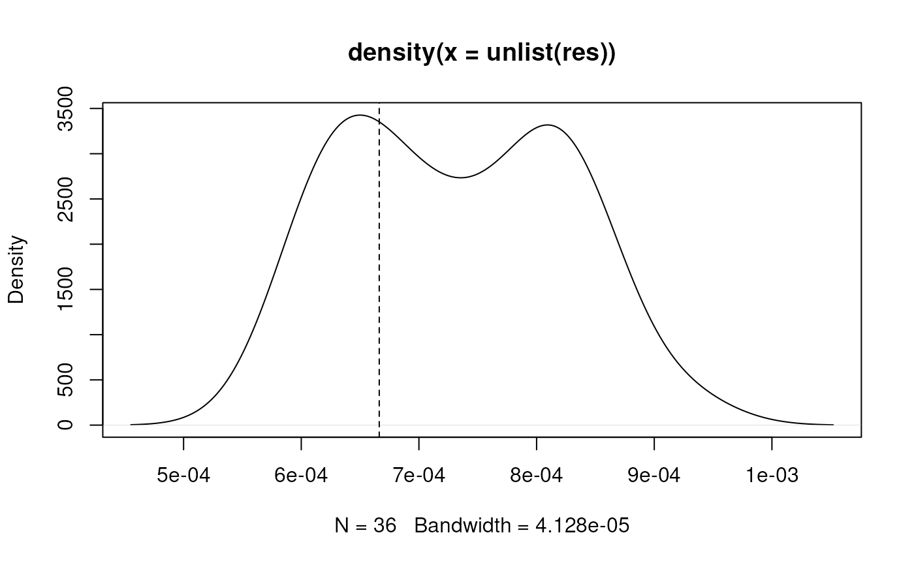

Estimate scattering of m/z values (due to technical, instrument specific noise) for the same ion in consecutive scans of a LCMS experiment.
Arguments
- x
MSnExporOnDiskMSnExpobject.- halfWindowSize
integer(1)defining the half window size for the moving window to combine consecutive spectra.- timeDomain
logical(1)whether m/z scattering should be estimated onmz(timeDomain = FALSE) orsqrt(mz)(timeDomain = TRUE) values. SeecombineSpectraMovingWindow()for details on this parameter.
Details
The m/z values of the same ions in consecutive scans (spectra) of a LCMS run will not be identical. This random noise is expected to be smaller than the resolution of the MS instrument. The distribution of differences of m/z values from neighboring spectra is thus expected to be (at least) bi-modal with the first peak representing the above described random variation and the second (or largest) peak the m/z resolution. The m/z value of the first local minimum between these first two peaks in the distribution is returned as the m/z scattering.
Note
For timeDomain = TRUE the function does not return the estimated
scattering of m/z values, but the scattering of sqrt(mz) values.
See also
estimateMzResolution() for the function to estimate a
profile-mode spectrum's m/z resolution from it's data.
Examples
library(MSnbase)
library(msdata)
## Load a profile-mode LC-MS data file
f <- dir(system.file("sciex", package = "msdata"), full.names = TRUE)[1]
od <- readMSData(f, mode = "onDisk")
im <- as(filterRt(od, c(10, 20)), "MSnExp")
res <- estimateMzScattering(im)
## Plot the distribution of estimated m/z scattering
plot(density(unlist(res)))
## Compare the m/z resolution and m/z scattering of the spectrum with the
## most peaks
idx <- which.max(unlist(spectrapply(im, peaksCount)))
res[[idx]]
#> [1] 0.0006662792
abline(v = res[[idx]], lty = 2)

estimateMzResolution(im[[idx]])
#> [1] 0.001419494
## As expected, the m/z scattering is much lower than the m/z resolution.